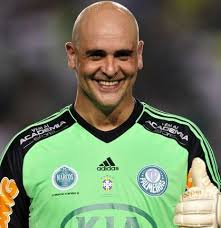
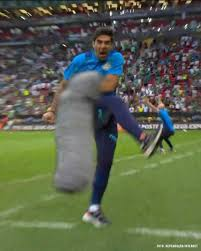
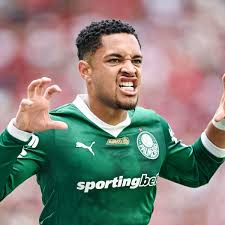
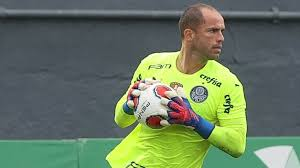
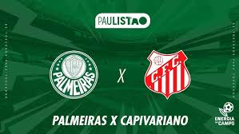
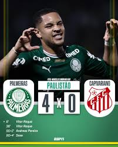

Atrás do gol de Marcos passa wifi?
Gandula que mexia no celular atrás do gol de Marcos diz que ali não pega sinal.

Abel foi expulso mais uma vez?
No jogo contra o Corinthians Abel é expulso de novo, portanto sai vitorioso.

Vitor Roque mostra que em 2026 veio para quebrar recordes
No ano passado Vitor Roque foi peça fundamental no desempenho do Palmeiras e mostra que este ano há de se superar.

Marcelo Lomba finalmente deixará de ser o terceiro goleiro
Com a saída de Weverton, Marcelo Lomba deixa de ser o terceiro goleiro e agora é o goleiro reserva.

Já ganhou!
No próximo sábado o Verdão irá enfrentar o Capivariano que eu nem conhecia.
Estreia de Jhon Arias?
No próximo jogo contra o Capivariano, rumores indicam estreia de Jhon Arias.

Palmeiras bate Capivariano nas quartas do Paulistão 2026
Palmerias da mais um passo rumo ao título do Paulistão 2026.